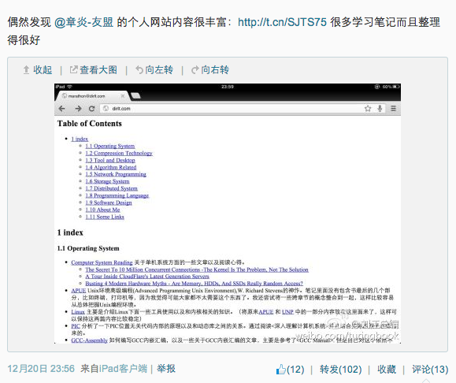
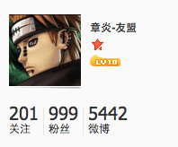

主页千次PV
@2013-12-21
早上起来发现自己的微博提醒有100多条。第一个反应就是，我是不是转发了某条特别有意思的微博，然后又被很多人转发。点进去之后，发现原来是自己的网站被刘江总编推荐了，然后很快又被何登成同学转发。

带来的不仅仅是转发量，还有微博好友，以及网站的PV。按照我以前的观察，自己的网站每天的PV通常是200-300左右，500已经是峰值了。可是截止到10:00PM，PV到了3000，微博的好友数量从800增长到了接近1000.
被大家关注的感觉非常不错的，可是我也知道这种感觉只是暂时的。说实话，我写的大部分东西基本上都是写给我自己看的，思维上存在一定的跳跃。所以如果大家觉得看的地方不明白的话，直接告诉我就好了，我会尽快地回复并且修改，还是希望能够自己写的东西或多或少地帮助到大家。谢谢你们。
@2013-12-23
粉丝数目从999跃变到了1001
 ===>